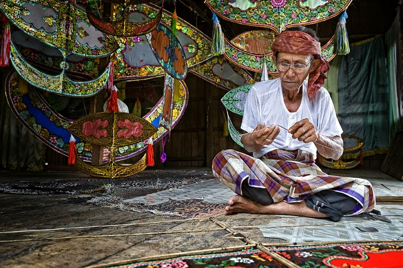

WAU BULAN
" A Graceful Dance of Color & Tradition Under The Moonlit Sky"
Wau Museum
Kite Making and the Wau Maker from Kelantan
The Beauty Of Wau: The Original Story and History

Pembuatan Wau Bulan
Tokoh: Seman Mamat

Adiguru Kraf Wau Tradisional: Encik Shafie bin Jusoh
The Beauty Of Wau: The Original Story and History
Wau Gah Terbang di Ruang Angkasa
Wau Kelantan
Wow! Malaysian Kite, Wau!
LABU SAYONG
"A Timeless Vessel of Beauty, Shaped by Heritage & Whispered Tales"
Labu Sayong
Labu Sayong Maker Keeps Art Alive
Tokoh: Puan Hawa binti Ngah Salam
Blog Studio Tembikar: Jenis-Jenis Labu & Cara Memproses Labu Sayong
Labu Sayong: Keeping the pottery-making tradition alive
Labu Sayong 'Kuale' Bakal Ke Persada Dunia
Pengajaran dan Penidikan Seni: Labu Sayong
Perak's Royal Town of Kuala Kangsar
Preserving The Heritage of Pottery: Making in Perak